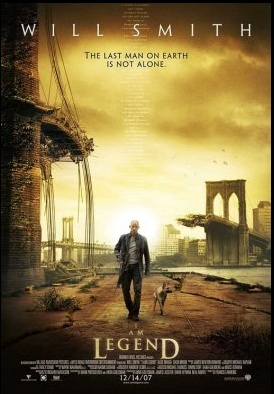

I am Legend

Directed by Francis Lawrence.
Summary This is going to be one of those reviews where someone reads the book and then sees the movie and doesn't like it very much.
Details I read Robinson Crusoe for the first time when I was about 30. It forms such a prominent thread within our cultural milieu that I expected it to be a pinnacle of literature, well-written and evocative. For me, however, it was nothing of the sort. It seemed to have been lazily dashed off by a nitwit aristocrat who'd never faced a single day of hardship in his life, with no thought at all given to the physical and psychological trials someone in Crusoe's predicament would suffer.
Only weeks later, I read Richard Matheson's novel I am Legend, and unexpectedly found it to be nigh on exactly the study of loneliness and despair that I had expected Crusoe would be. The portrayal of frantic days spent repairing the fortifications, alternating with horrific sleepless nights spent indoors, listening to them trying to get in, is as dense an atmosphere of desperation as I think I've ever been party to.
So it was with conflicting pangs of emotion that I first heard about the movie. In many ways the movie's strength is simply the inevitable reaction one has to the depiction of a desolate New York City. Will Smith's character is now a world-class scientist, bent on reversing the ravages of the zombie/vampire plague single-handed, working from his Hollywood-style basement laboratory. The novel's pivotal ending - from which the title is derived - is utterly transformed into something rather jolly and upbeat. Even the signs of him fraying around the edges under the strain have been sanitised - he talks to mannequins, rather than drinking himself into oblivion. It's Robinson Crusoe all over again.
Rating: 5/10 - not great.
Comments
Comments powered by Disqus